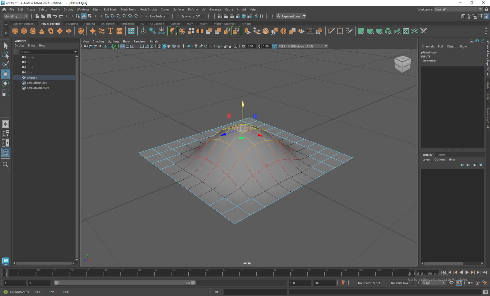
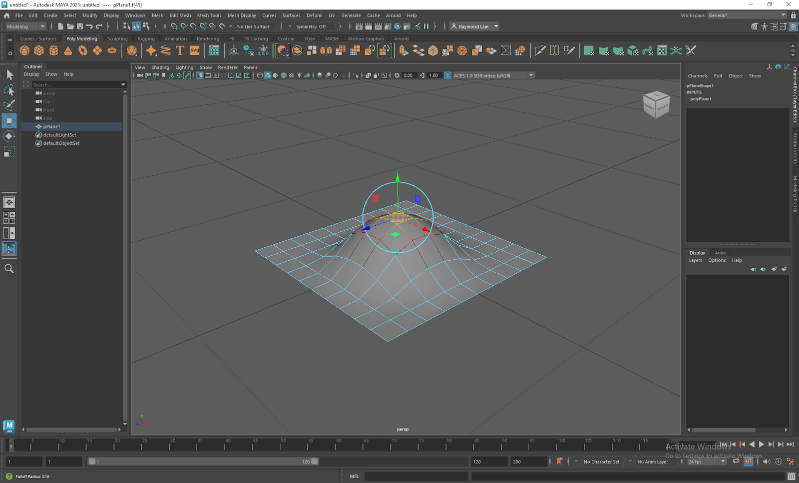
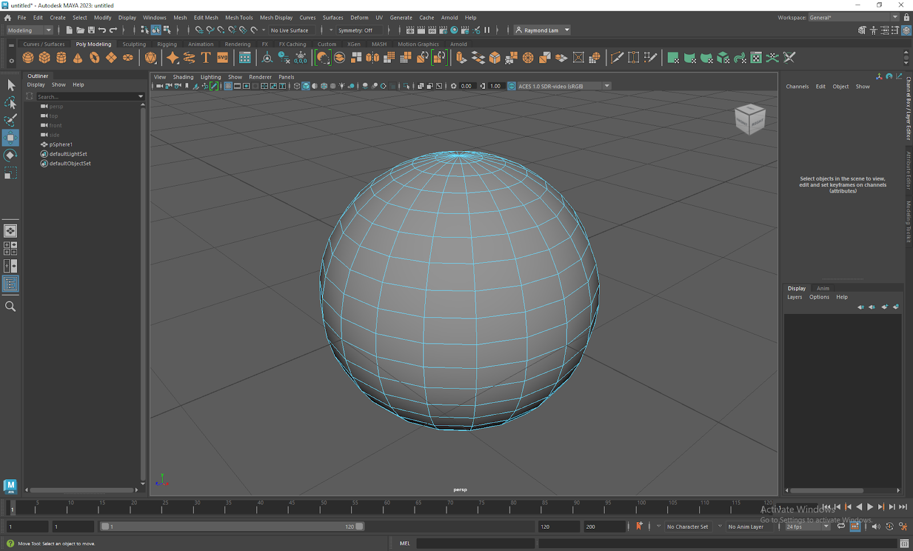
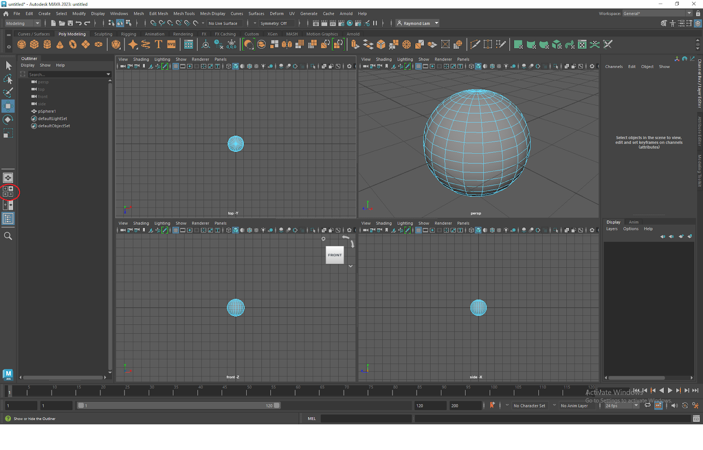
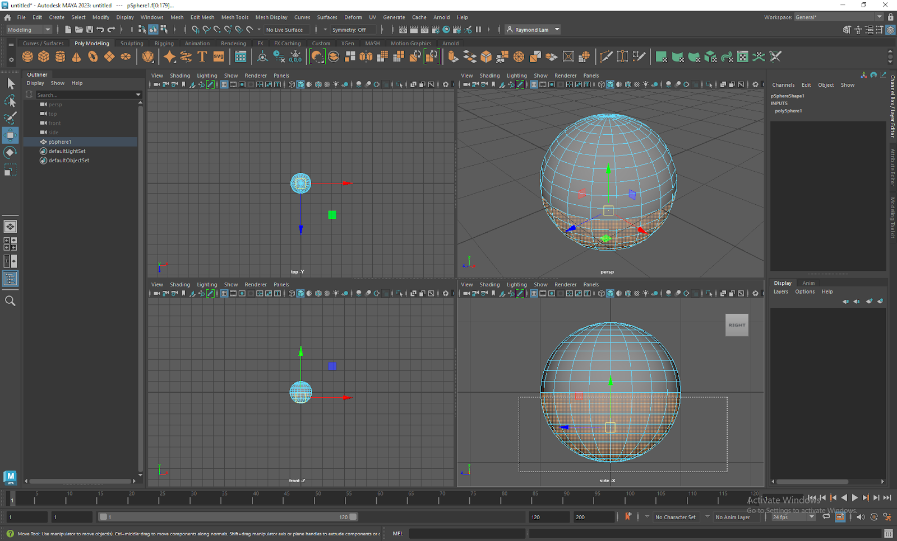
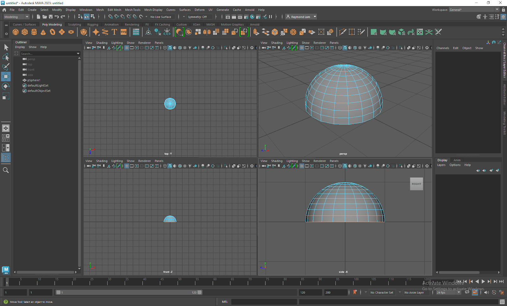

Watch the video below demonstrating the use of the Soft Selection Mode.
Download the video's transcript.
Let's review what we learned in the video about Soft Selection Mode.

The Soft Select Mode allows us to organically select elements about the initial selection.
1. Red represents the initial selection and will be manipulated with full effect.
2. Orange, yellow, or “colder” colors will be manipulated with decreasing effect, giving.
3. The result is a softer and smoother modeling of the polygon.
4. Try it on a flat plane in face mode!

Changing the "Fall off" heatmap will change your selection.
1. Keystroke “B” to activate / deactivate the Soft Selection Tool.
2. Holding down “B + Middle Mouse Button” for Windows.
3. “B + Middle Mouse Button” for Mac.
4. And moving your mouse from left to right will adjust the “Fall Off” or heatmap of your soft selection.
With a basic understanding of the Soft Selection Tool, let’s start making a bicycle helmet! You can make whatever you want as long as it is you can wear it on your head so let’s follow along and have fun.
Watch the video below demonstrating the use of the different camera view modes.
Download the video's transcript.

Changing your the view of your camera will allow you to select elements obstructed by your model.
1. I’m going to make a sphere.
2. I want to make a dome so I’m going to change the sphere into Face Mode.

Different view modes give you a more comprehensive view of your model.
1. With Face Mode active im going to open the 4 Axis View by clicking the button circled in Red on the left panel.
2. You now have 4 different perspectives to edit your model from, giving you a more comprehensive view of changes made from every angle.
3. This is important because models can look deceptively different depending on the angle you view it from.

Okay, lets continue working on our model.
1. With the 4 Axis view mode active zoom in on the side X axis and select half the faces.

Hit the delete button!
1. And Delete the selected faces!
2. We made a quick and effective dome, as opposed to staying in single camera mode and panning around the object - individually selecting faces.
3. Think about different ways you can use different view modes when making your model!
Watch the video below where I start demonstrate how to start modeling a helmet.
Download the video's transcript.